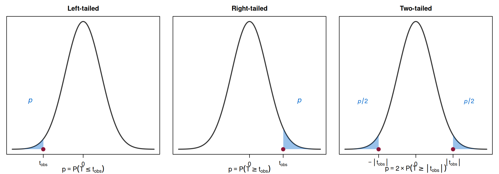

Parametric Hypothesis Tests — Part 2
The \(p\)-value and Further Examples
Lisbon Accounting and Business School – Polytechnic University of Lisbon
2025-04-14
3.2 — The \(p\)-value
Motivation
Before the break, we used the critical region approach:
- Fix \(\alpha\)
- Find the critical value(s)
- Compare \(z_{obs}\) (or \(t_{obs}\), \(q_{obs}\)) with the critical value
But this only tells us “reject” or “do not reject” for a specific \(\alpha\).
What if someone asks: “Would you still reject \(H_0\) at \(\alpha = 0.01\)?”
The \(p\)-value answers this question for all possible significance levels at once.
Definition of the \(p\)-value
\(p\)-value
The \(p\)-value is the probability, computed under \(H_0\), of observing a test statistic value as extreme as, or more extreme than, the value actually observed.
It is the smallest significance level at which we would reject \(H_0\).
Informally: the \(p\)-value measures how surprised we should be by the sample data, if \(H_0\) were true.
- Small \(p\)-value \(\Rightarrow\) data is very unlikely under \(H_0\) \(\Rightarrow\) strong evidence against \(H_0\)
- Large \(p\)-value \(\Rightarrow\) data is consistent with \(H_0\) \(\Rightarrow\) no evidence against \(H_0\)
\(p\)-value Formulas
The formula depends on the type of test:
| Type of test | \(p\)-value |
|---|---|
| Left-tailed (\(H_1: \theta < \theta_0\)) | \(p = P(T \leq t_{obs} \mid H_0)\) |
| Right-tailed (\(H_1: \theta > \theta_0\)) | \(p = P(T \geq t_{obs} \mid H_0)\) |
| Two-tailed (\(H_1: \theta \neq \theta_0\)) | \(p = 2 \times P(T \geq |t_{obs}| \mid H_0)\) |
Here \(T\) denotes the test statistic (could be \(Z\), \(T\), \(Q\), etc.) and \(t_{obs}\) is its observed value.
Decision Rule Using the \(p\)-value
\(p\)-value decision rule
Given a significance level \(\alpha\):
- If \(p\text{-value} \leq \alpha\) \(\Rightarrow\) reject \(H_0\)
- If \(p\text{-value} > \alpha\) \(\Rightarrow\) do not reject \(H_0\)
This is equivalent to the critical region approach, but more informative:
- The critical region approach gives a binary answer for one specific \(\alpha\)
- The \(p\)-value tells you exactly how much evidence the data provides against \(H_0\)
\(p\)-value: Graphical Interpretation

The shaded blue areas represent the \(p\)-value: the probability of obtaining a result as extreme as \(t_{obs}\), under \(H_0\).
Example 3: \(p\)-value Calculation (cont. from Example 1)
Recall: \(H_0: \mu \geq 500\) vs. \(H_1: \mu < 500\), \(z_{obs} = -2.25\), left-tailed test.
\[p\text{-value} = P(Z \leq z_{obs} \mid H_0) = P(Z \leq -2.25)\]
\[= \Phi(-2.25) = 1 - \Phi(2.25) = 1 - 0.9878 = 0.0122\]
Interpretation: If \(H_0\) were true (\(\mu = 500\)), the probability of observing a sample mean as low as (or lower than) 497 is only 1.22%.
Decision (at \(\alpha = 0.05\)): Since \(p = 0.0122 < 0.05 = \alpha\), we reject \(H_0\).
Decision (at \(\alpha = 0.01\)): Since \(p = 0.0122 > 0.01 = \alpha\), we do not reject \(H_0\).
Example 4: \(p\)-value with the \(t\)-distribution
A random sample of \(n = 20\) observations is drawn from a Normal population. The sample mean is \(\bar{x} = 101\) and the corrected sample standard deviation is \(s' = 3\).
Test \(H_0: \mu \leq 100\) vs. \(H_1: \mu > 100\).
Example 4: Solution
Test statistic (\(\sigma\) unknown, Normal population):
\[T_0 = \frac{\bar{X} - \mu_0}{S'/\sqrt{n}} \underset{\text{under } H_0}{\sim} t_{(n-1)} = t_{(19)}\]
Observed value:
\[t_{obs} = \frac{101 - 100}{3/\sqrt{20}} = \frac{1}{3/4.472} = \frac{1}{0.6708} \approx 1.49\]
Example 4: Solution (cont.)
\(p\)-value (right-tailed test):
\[p = P(T > 1.49 \mid H_0)\]
Using the \(t\)-Student table (Table 7) with 19 degrees of freedom:
We look for the row \(\nu = 19\). We find that \(t_{0.10,(19)} = 1.328\) and \(t_{0.05,(19)} = 1.729\).
Since \(1.328 < 1.49 < 1.729\), we have:
\[0.05 < p < 0.10\]
Decision (at \(\alpha = 0.05\)): Since \(p > 0.05\), we do not reject \(H_0\).
Conclusion: At the 5% level, there is not sufficient evidence to conclude that \(\mu > 100\).
Reading the \(p\)-value from Tables
When using the \(t\)-Student or \(\chi^2\) tables, we typically cannot compute the exact \(p\)-value. Instead, we bracket it:
Strategy: Find the two table entries that “sandwich” \(t_{obs}\) (or \(q_{obs}\)).
Example: \(t_{obs} = 2.861\), \(\nu = 19\) (right-tailed).
From Table 7: \(t_{0.005,(19)} = 2.861\).
So \(p = 0.005\) (exactly, in this case).
Tip: If \(t_{obs}\) matches a table entry exactly, the \(p\)-value is the corresponding tail probability. Otherwise, state the interval.
Example 5: Two-tailed \(p\)-value
A manufacturer specifies that the mean diameter of a component is \(\mu_0 = 25\) mm. The population variance is known: \(\sigma^2 = 4\). A random sample of \(n = 49\) components has \(\bar{x} = 25.6\) mm.
Test \(H_0: \mu = 25\) vs. \(H_1: \mu \neq 25\). Compute the \(p\)-value.
Example 5: Solution
Test statistic (\(\sigma\) known):
\[Z_0 = \frac{\bar{X} - \mu_0}{\sigma/\sqrt{n}} \sim N(0,1)\]
Observed value:
\[z_{obs} = \frac{25.6 - 25}{2/\sqrt{49}} = \frac{0.6}{2/7} = \frac{0.6}{0.2857} \approx 2.10\]
\(p\)-value (two-tailed):
\[p = 2 \times P(Z \geq |z_{obs}|) = 2 \times P(Z \geq 2.10)\]
\[= 2 \times [1 - \Phi(2.10)] = 2 \times (1 - 0.9821) = 2 \times 0.0179 = 0.0358\]
Decision: \(p = 0.0358 < 0.05\), so we reject \(H_0\) at \(\alpha = 0.05\). There is evidence that \(\mu \neq 25\) mm.
Equivalence: Critical Region vs. \(p\)-value
Both approaches always give the same conclusion for a given \(\alpha\):
| Approach | Reject \(H_0\) if… |
|---|---|
| Critical region | \(t_{obs}\) falls in the rejection region |
| \(p\)-value | \(p\text{-value} \leq \alpha\) |
In practice, many practitioners prefer the \(p\)-value because:
- It provides more information (the exact strength of evidence)
- It allows the reader to draw their own conclusion for their preferred \(\alpha\)
- It is the standard output of statistical software
Common Misinterpretations of the \(p\)-value
The \(p\)-value is NOT:
- The probability that \(H_0\) is true
- The probability that \(H_1\) is false
- The probability of making an error
The \(p\)-value IS:
The probability of observing data as extreme as (or more extreme than) what was observed, assuming \(H_0\) is true.
Practical Guidelines for Interpreting \(p\)-values
While the decision rule (\(p \leq \alpha \Rightarrow\) reject) is clear-cut, some authors provide informal guidelines:
| \(p\)-value | Evidence against \(H_0\) |
|---|---|
| \(p > 0.10\) | No evidence |
| \(0.05 < p \leq 0.10\) | Weak (marginal) evidence |
| \(0.01 < p \leq 0.05\) | Moderate evidence |
| \(0.001 < p \leq 0.01\) | Strong evidence |
| \(p \leq 0.001\) | Very strong evidence |
Source: adapted from Newbold, Carlson & Thorne.
These are informal guidelines, not strict rules. The choice of \(\alpha\) remains a decision of the researcher.
Relationship Between Confidence Intervals and Hypothesis Tests
The Connection
There is a direct relationship between a two-tailed hypothesis test and a confidence interval:
CI–Test Equivalence
At significance level \(\alpha\), we reject \(H_0: \mu = \mu_0\) (two-tailed) if and only if \(\mu_0\) does not belong to the \((1-\alpha)\times 100\%\) confidence interval for \(\mu\).
This makes intuitive sense: if the hypothesized value \(\mu_0\) is outside the plausible range given by the CI, then the data contradicts \(H_0\).
Example 6: CI and Test Equivalence
Recall Example 5: \(\mu_0 = 25\), \(\sigma = 2\), \(n = 49\), \(\bar{x} = 25.6\).
The 95% confidence interval for \(\mu\) is:
\[\bar{x} \pm z_{0.025} \cdot \frac{\sigma}{\sqrt{n}} = 25.6 \pm 1.96 \times \frac{2}{7} = 25.6 \pm 0.56\]
\[\text{CI} = [25.04\, ;\, 26.16]\]
Since \(\mu_0 = 25 \notin [25.04\, ;\, 26.16]\), we reject \(H_0: \mu = 25\) at \(\alpha = 0.05\).
This is consistent with our earlier finding (\(p = 0.0358 < 0.05\)).
Solved Exercises
Exercise 1
A manufacturer claims that light bulbs last, on average, at least 1000 hours. A random sample of 25 bulbs from a Normal population gives \(\bar{x} = 980\) hours and \(s' = 40\) hours.
At \(\alpha = 0.05\), is there evidence against the manufacturer’s claim?
Exercise 1: Solution
Step 1: \(H_0: \mu \geq 1000\) vs. \(H_1: \mu < 1000\) (left-tailed)
Step 2: \(\alpha = 0.05\)
Step 3: \(\sigma\) unknown, Normal population, so:
\[T_0 = \frac{\bar{X} - \mu_0}{S'/\sqrt{n}} \underset{\text{under } H_0}{\sim} t_{(24)}\]
Exercise 1: Solution (cont.)
Step 4: Left-tailed, \(\alpha = 0.05\), \(\nu = 24\)
\[\text{Rejection region: } \left]-\infty\,;\, -t_{0.05,(24)}\right] = \left]-\infty\,;\, -1.711\right]\]
(From Table 7: \(t_{0.05,(24)} = 1.711\))
Step 5:
\[t_{obs} = \frac{980 - 1000}{40/\sqrt{25}} = \frac{-20}{8} = -2.50\]
Step 6: \(t_{obs} = -2.50 < -1.711\) → falls in the rejection region.
Decision: Reject \(H_0\).
Exercise 1: \(p\)-value
\[p = P(T \leq -2.50) = P(T \geq 2.50)\]
From Table 7, \(\nu = 24\): \(t_{0.01,(24)} = 2.492\) and \(t_{0.005,(24)} = 2.797\).
Since \(2.492 < 2.50 < 2.797\), we have \(0.005 < p < 0.01\).
Conclusion: At 5%, there is strong evidence that the mean lifetime is less than 1000 hours (\(p < 0.01\)).
Exercise 2
A food processing company fills cereal boxes labeled as 500 g. The variance of the filling process is known to be \(\sigma^2 = 25 \text{ g}^2\). A random sample of \(n = 64\) boxes yields \(\bar{x} = 498\) g.
Test whether the mean weight differs from 500 g at \(\alpha = 0.05\).
Compute the \(p\)-value.
Exercise 2: Solution
a) \(H_0: \mu = 500\) vs. \(H_1: \mu \neq 500\) (two-tailed)
\(\sigma = 5\) is known, \(n = 64\):
\[Z_0 = \frac{\bar{X} - 500}{\sigma/\sqrt{n}} \sim N(0,1) \qquad z_{obs} = \frac{498 - 500}{5/\sqrt{64}} = \frac{-2}{5/8} = \frac{-2}{0.625} = -3.20\]
Rejection region (two-tailed, \(\alpha = 0.05\)):
\[\left]-\infty;\, -z_{0.025}\right] \cup \left[z_{0.025};\, +\infty\right[ = \left]-\infty;\, -1.96\right] \cup \left[1.96;\, +\infty\right[\]
Since \(z_{obs} = -3.20 < -1.96\), we reject \(H_0\).
Exercise 2: Solution (cont.)
b) \(p\)-value (two-tailed):
\[p = 2 \times P(Z \geq |{-3.20}|) = 2 \times P(Z \geq 3.20)\]
\[= 2 \times [1 - \Phi(3.20)] = 2 \times (1 - 0.9993) = 2 \times 0.0007 = 0.0014\]
Very strong evidence against \(H_0\): the \(p\)-value is much smaller than any conventional \(\alpha\).
Exercise 3
From a random sample of \(n = 20\) observations drawn from a Normal population, one obtains \(\bar{x} = 101\) and \(s' = 3\).
Consider the test: \(H_0: \mu \leq 100\) vs. \(H_1: \mu > 100\).
For \(\alpha = 0.05\), determine the rejection region.
If, for another sample of the same size, \(t_{obs} = 2.861\), what is the \(p\)-value?
Exercise 3: Solution
a) Right-tailed test, \(T_0 \sim t_{(19)}\):
\[\text{Rejection region: } \left[t_{0.05,(19)}\,;\, +\infty\right[ = \left[1.729\,;\, +\infty\right[\]
(Table 7: \(t_{0.05,(19)} = 1.729\))
b) For \(t_{obs} = 2.861\), right-tailed:
\[p = P(T > 2.861)\]
From Table 7, \(\nu = 19\): \(t_{0.005,(19)} = 2.861\).
So \(p = 0.005\).
There is evidence to reject \(H_0\) for all usual significance levels (\(0.005 < \alpha\), for any conventional \(\alpha\)).
Summary of Today’s Lecture
Key takeaways — Lecture 6
- A hypothesis test is a formal procedure to evaluate a claim about a population parameter
- \(H_0\) (status quo) vs. \(H_1\) (research hypothesis); \(H_0\) always contains equality
- The test statistic is a pivot variable computed under \(H_0\)
- Type I Error (\(\alpha\)) = rejecting true \(H_0\); Type II Error (\(\beta\)) = not rejecting false \(H_0\)
- The \(p\)-value is the smallest \(\alpha\) at which we would reject \(H_0\)
- Decision: reject \(H_0\) if \(p \leq \alpha\), or equivalently, if \(t_{obs}\) falls in the rejection region
- A two-tailed test at level \(\alpha\) and a \((1-\alpha)\) CI give equivalent conclusions
Next Lecture (April 21)
We will apply the testing framework to specific cases:
- Section 3.3: Tests for means and variances of Normal populations
- Section 3.4: Tests for the difference of means of two Normal populations
- Section 3.5: Large-sample tests (asymptotic normality)
Make sure to review the relevant sections in Newbold (Chapter 9).
Disclaimer
These slides are a free adaptation of the course material for Estatística II by Prof. Teresa Ferreira and Prof. Sandra Custódio from the Lisbon Accounting and Business School — Polytechnic University of Lisbon.
Primary reference: Newbold, P., Carlson, W. & Thorne, B. — Statistics for Business and Economics, Global Edition.

Statistics II — Parametric Hypothesis Tests